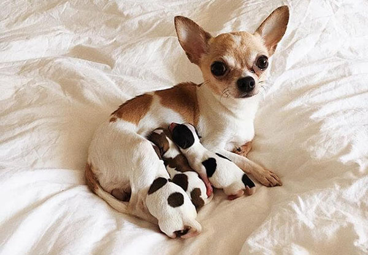
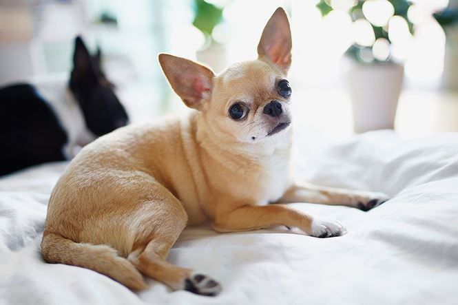

Đây là giống chó lâu đời nhất ở châu Mỹ và là giống chó có thân hình nhỏ nhất trong mọi loài chó trên thế giới. Có nguồn gốc từ Mexico nhưng dường như chúng lại được thế giới biết đến nhờ công của những người Trung Quốc. Chúng chỉ được mang đến châu Âu vào những năm cuối của thế kỷ 19. Tên của giống chó này được lấy từ tên của bang Chihuahua của Mexico, nơi mà các nhà thám hiểm đã tìm ra chúng.
Những người thổ dân da đỏ trước thời Colombo tìm ra châu Mỹ đã tin tưởng rằng giống chó này có liên hệ với các vị Thần thiêng liêng. Những chú chó Chihuahua quý nhất thường có trọng lượng nhỏ hơn 1,3 kg. Những con này có thể đứng gọn trong lòng bàn tay của người lớn. Loài Chihuahua lông dài thường được đánh giá riêng, tuy nhiên về cơ bản thì cũng giống như loài lông ngắn ngoại trừ mỗi tiêu chí về bộ lông. Chihuahua là loại chó làm bầu bạn rất phổ biến.
Chihuahua là giống chó nhỏ con có đầu tròn và mõm ngắn. Nó có đôi mắt to tròn, màu sẫm gần như đen, đôi khi là màu đỏ ruby sẫm. Đôi tai đặc hiệu to đùng luôn giữ vểnh. Cún con của Chihuahua ở phần thóp trên đỉnh đầu có một hõm mềm. Lỗ thủng này khi cún lớn lên sẽ được xương sọ che phủ hết. Thân hình chắc chắn, dài hơn so với chiều cao, đuôi uốn cong trên lưng hoặc vắt sang một bên.
